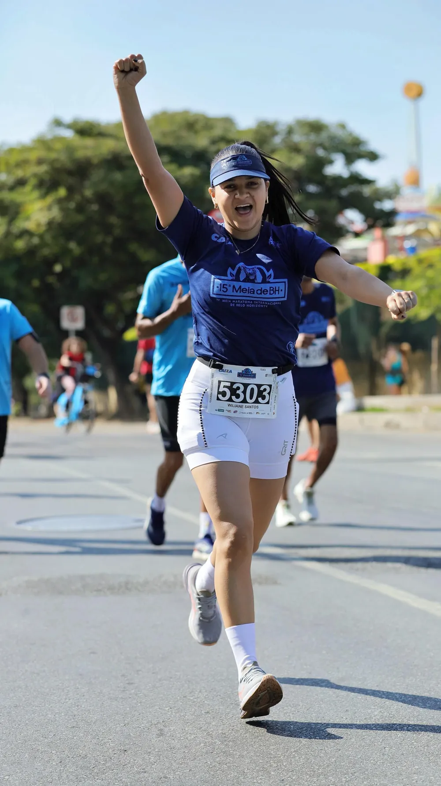
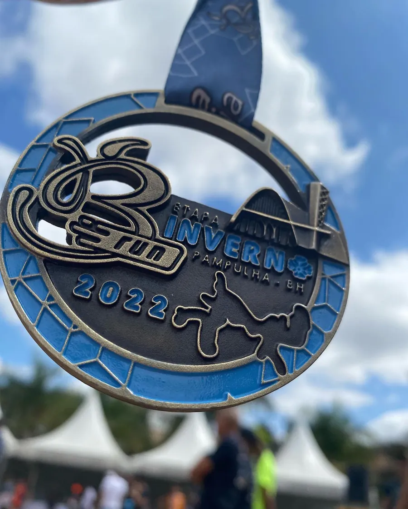

Nutricionista · CRN-9 25524 · Betim/MG
Emagrecer sem parar de viver.
Eu ajudo mulheres a emagrecer e hipertrofiar com estratégia simples, sem restrição e com resultados reais.
CRN-9 25524
Você não precisa escolher entre emagrecer e viver. Precisa de uma estratégia que caiba na sua vida.
Wiliane Santos
O que trava o processo
A volta que não sai do lugar.
O que costuma atrapalhar o emagrecimento não é uma refeição diferente. É o ciclo de restrição, exagero, culpa e compensação.
Toque em cada etapa.
Restrição
“Segunda eu começo.” Cortes severos, jejum longo, treino dobrado.
A saída: não pular refeições para compensar, comer com tranquilidade, aproveitar os momentos especiais sem culpa e retomar a rotina na próxima refeição.
A consulta
Você chega com um objetivo. Eu preciso entender a sua história para construir o caminho até ele.
-
01
Escuta
Não quero só saber quanto você pesa. Quero entender sua rotina, seus hábitos, suas dificuldades, suas preferências e a sua relação com a comida.
-
02
Estratégia individualizada
A partir disso, construímos um plano possível de ser colocado em prática, com o que você gosta encaixado no dia a dia. Nada de lista de alimentos proibidos.
-
03
Acompanhamento
Ajustes no caminho, olhando para muito além do número da balança. Resultado de verdade vem de consciência e constância.
Para quem é
Para a mulher que quer…
-
01
Emagrecer
Perder gordura sem viver presa a uma dieta e sem o efeito sanfona de quem vive recomeçando na segunda.
-
02
Hipertrofiar e definir
Treina com constância e o espelho não acompanha? Proteína adequada, comida que nutre de verdade e estratégia para preservar músculo.
-
03
Fazer as pazes com a comida
Sair do ciclo da culpa. Doce, pastel depois da corrida, jantar com a família: tudo pode entrar, com contexto.
A balança mostra um número. Seu corpo mostra transformação.
- menos inchaço
- mais energia
- ganho de massa magra
- roupas mais folgadas
- melhora da saúde
Quem sou
De Flexeiras a Betim, um passo de cada vez.
- Flexeiras · ALonde nasci e vivi a infância
- Porto Calvo · ALa adolescência
- Betim · MGaos 18 anos, e aqui fiquei

Sou nordestina com orgulho e a primeira da minha família materna a concluir um curso de nível superior.
Também sou meia-maratonista. Cada treino, cada escolha no prato e cada quilômetro me lembram do que eu já sabia na teoria: cuidar de si é um ato de constância, amor-próprio e fé. O que ensino no consultório, aplico na rotina.
- 21 km
- a distância de cada meia maratona
- 3×
- linhas de chegada cruzadas
Onde tenho me atualizado
- Congresso de Nutrição Funcional e Esportiva
- Congresso Hi-Nutrition e Feira Consulfarma · São Paulo
- WHE · Women’s Health Experience
- 10º Meeting da Manipulata

Toda segunda-feira no Instagram
Nutri sem enrolação.
As dúvidas que mais aparecem no consultório, respondidas do jeito que eu respondo lá.
Comi um doce. Estraguei tudo?
Não. Um doce não anula seus treinos nem joga sua dieta no lixo. O que impacta seus resultados é o que você faz com frequência, e não uma exceção isolada. Aprenda a encaixar o que você gosta no planejamento.
Exagerei no fim de semana. Faço jejum na segunda?
O inchaço de segunda é retenção, glicogênio e peso intestinal, não gordura. Compensar com jejum longo, “detox” ou treino dobrado só alimenta o ciclo. Volte para o básico: hidratação, comida de verdade e a rotina na próxima refeição.
Treino e faço dieta, mas a balança não desce.
O corpo muda antes da balança mostrar. Sono ruim, por exemplo, mexe nos hormônios da fome e dificulta o processo. Observe também medidas, energia, roupas e disposição.
E a medicação para emagrecer?
Não sou contra. Quando bem indicada, com acompanhamento médico e nutricional, é uma ferramenta válida. Mas nenhum remédio cria o hábito por você. Quem sustenta o resultado é o comportamento.
Vamos começar?
Você não precisa ser perfeita. Só precisa continuar.
Me chama no WhatsApp e a gente começa pelo seu momento.
Iniciar meu processo